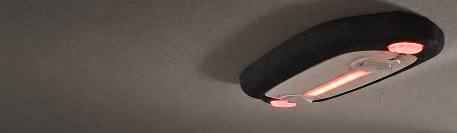
Project Sponsor
Designing Scalable Service Delivery Model for an in-cabin safety product - RideBuddy
- Timeline
- 26 Weeks
Aug 2026 - In progress - Role
- Service System Designer
- Client
- RideBuddy Operations Team
- Methods
- Qualitative Interview
Contextual Inquiry
Time and Motion Study
Safety as infrastructure in corporate mobility
RideBuddy is an intelligent in-cabin safety and comfort solution built for the corporate mobility ecosystem. It combines hardware, cloud software, audio-based driver nudging, and passenger emergency support (SOS) to help Mobility Service Providers (MSPs) and corporate customers deliver safer, reliable, and more comfortable rides for their employees.
Read more about it↗-
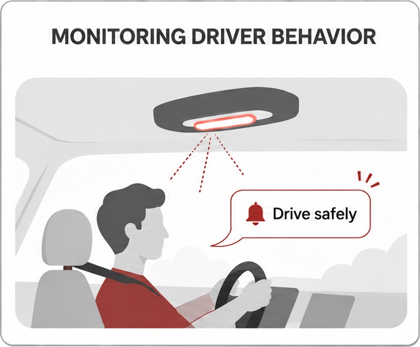
Smart Nudges -
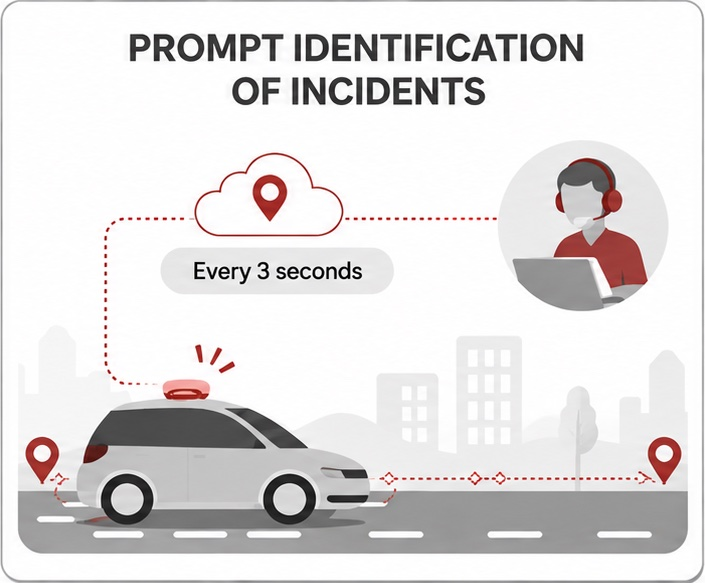
GPS Tracking, Rash Driving &
Over-speeding Alerts -
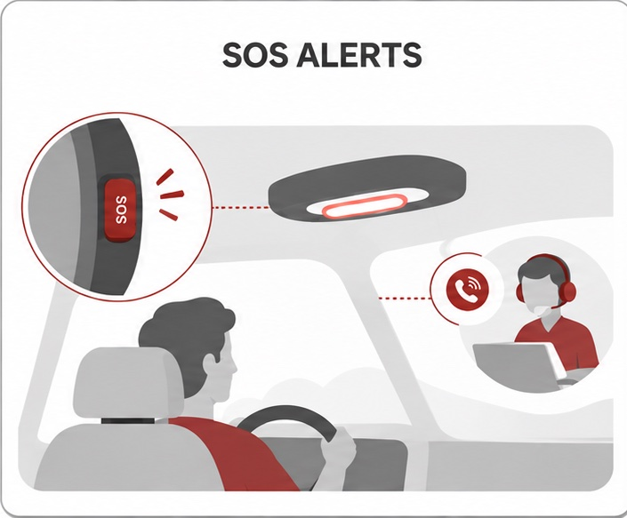
SOS for Passenger Safety
Context of the project
When I joined RideBuddy as a Service Design Intern in August 2026, the team was moving from a 200-device proof of concept with an American banking firm to a 2,000-device rollout across multiple corporate clients.
The front stage was working well: nudging drivers, giving fleet managers visibility, and helping employees feel safe on their trips. The backstage, covering device deployment, monitoring and maintenance, had been handled case by case.
As the fleet grows across geographies, devices must be monitored continuously and maintained proactively to keep service uninterrupted. That requires deliberately designed processes, workflows and teams.
Problem Statement
How might we design a scalable service delivery model, covering systems, processes, workflows and team structures, that keeps 2,000+ RideBuddy devices reliable across geographies, so customers get uninterrupted safety?
Approach
-
Baseline Research
Stakeholder Workshops (done) -
Current-State Operations Blueprint
Operations Journey Mapping (done) -
Phase Prioritisation
Phase Deep dive Currently Working
in this phase -
Literature Review
(Analogous experiences) (next) -
Co-Design Solution
Validation & Testing
Evaluation Framework (next)
Snapshots from work
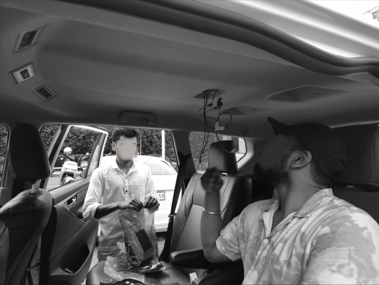
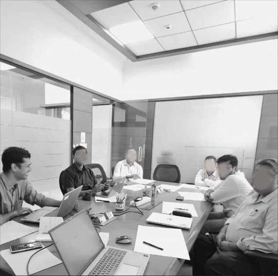
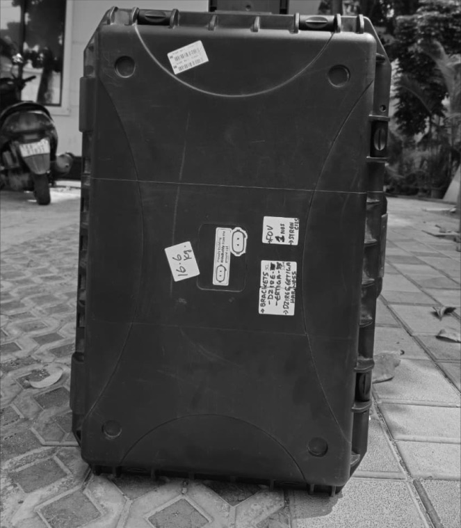
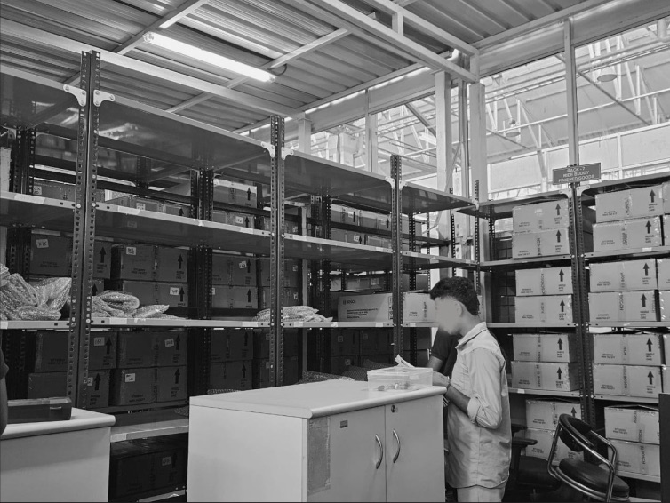
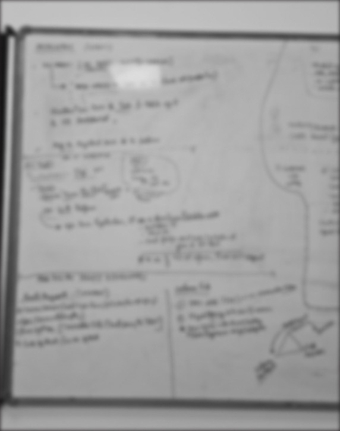
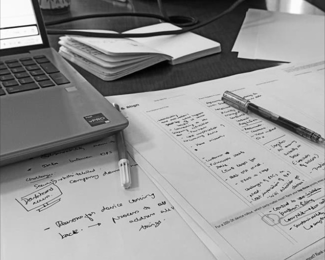
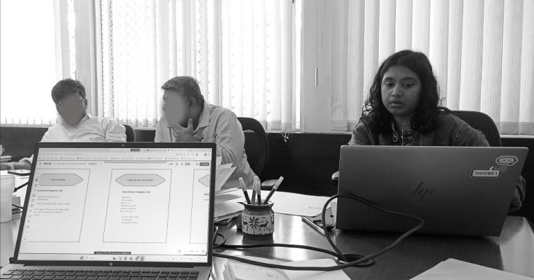
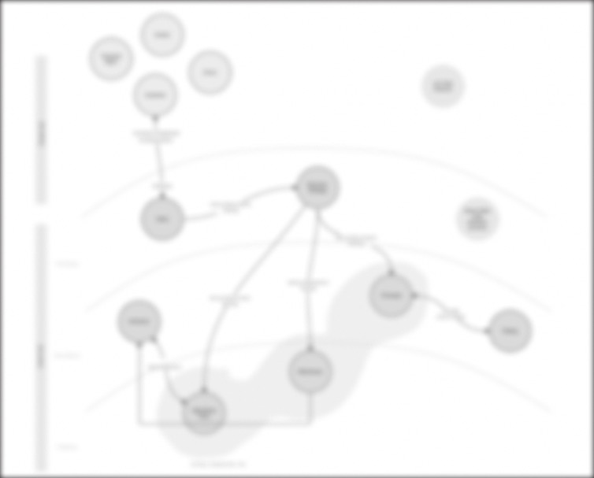
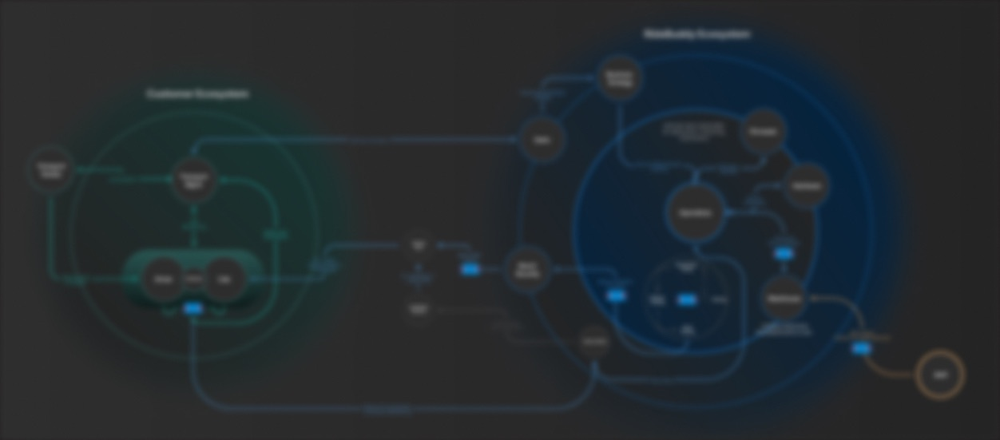
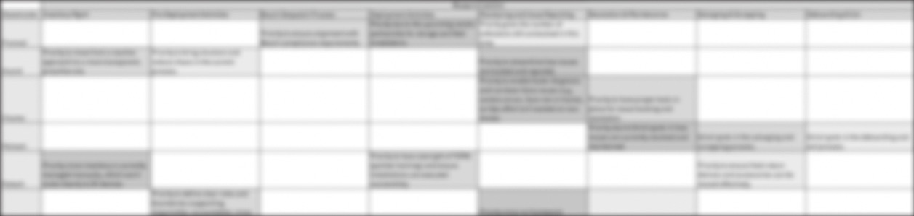
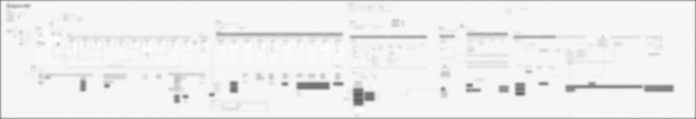
Currently in progress as part of my Master’s Graduation Project at NID, in collaboration with Bosch India. Proprietary data, client details and commercial information are withheld under NDA.